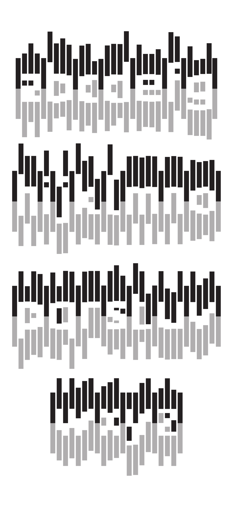
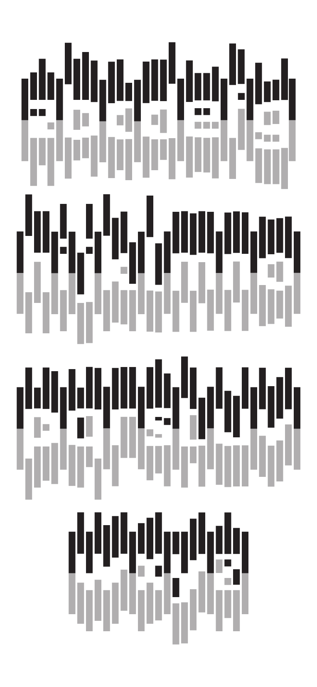

Skyline
2018
I designed the interactive typeface Skyline with inspiration from city skylines with HTML, CSS, and jQuery. The user creates an abstract letterscape on the browser with the letters, each interaction triggered by a mouse event. This project was designed for a 15-inch screen for presentation purposes.
The complete typeface:  
PROCESS
During the discovery stage of my process, I started out by creating drafts in Illustrator before getting into coding. Since I had to create an entire typeface, I focused on developing a system of simple shapes that could easily adapt to forming different letters. After the first round of critique, I refined each "unit" so that they could be utilized more efficiently. I ultimately chose to develop the idea shown in the last image further because I was intrigued by how the letters formed in the negative space could engage the user in an on-screen setting.
Below is an experimental charette with jQuery.
In further refining my idea, I learned that I had made a crucial mistake: I was naming my classes and id's inefficiently. So I went through a process of renaming the majority of the elements in my code, which eventually allowed my refining stage to go more smoothly. You can visit the interactive Skyline here.
HTML, CSS, and jQuery were used to create this project.